Denominator df for comparisons from an asreml model
Source:R/prediction_methods.R
asreml_denominator_df.RdLooks up the denominator df for classify in the wald() table. When the
term has its own row, that row's denDF is used for every comparison.
Details
An at(F):X term has no single row: wald() gives one per level of F
(at(F, 'a'):X, at(F, 'b'):X, ...), each with its own denDF. For
classify = "F:X", a comparison within one level of F uses that level's
denDF, which is the df ASReml-R uses to test X at that level. A comparison
across levels has no exact df (with level-specific residual variances it is
a Welch-type problem), so the smaller of the two levels' denDF is used as a
conservative bound. Levels without a row (when at() was given a subset of
levels) use the residual df.
Otherwise, for example for a random term, the residual df is used with a warning.